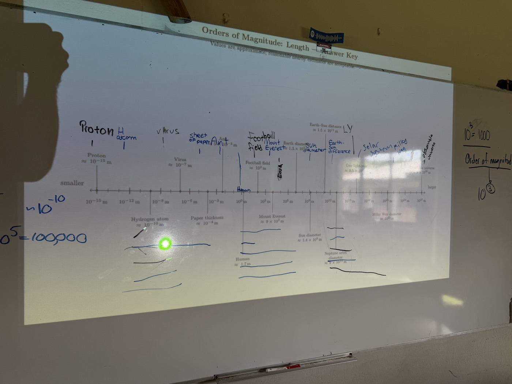

Lesson notes on the seven SI base units, the 2019 redefinition, metric prefixes, orders of magnitude, significant figures, scientific notation, and the Greek alphabet you'll see for the rest of the course.
I begin here every year: why does a shared system of measurement matter at all? Every quantity you'll measure in this course, force, energy, charge, all of it, reduces to some combination of seven base units. Get comfortable with these now.
| Quantity | Unit | Symbol |
|---|---|---|
| Length | metre | m |
| Mass | kilogram | kg |
| Time | second | s |
| Electric current | ampere | A |
| Temperature | kelvin | K |
| Amount of substance | mole | mol |
| Luminous intensity | candela | cd |
Every other unit you'll use, newtons, joules, watts, volts, is built out of these seven. That's the whole point of a shared, universal definition: a measurement made in my classroom means the same thing in any other lab on Earth, or on Mars, which matters more than it sounds like it should.
I like to have students look up the official definitions themselves and read them out loud, because most of them sound strange the first time. Then I walk through the history of the 2019 redefinition, because it's a good story and it changes how the definitions feel. Until May 20, 2019, the kilogram was still defined by a physical object: a platinum-iridium cylinder kept in a vault in France, nicknamed Le Grand K. Every kilogram on Earth was, by definition, whatever that one cylinder happened to weigh. The trouble is that physical objects drift. Le Grand K's mass appears to have shifted slightly over a century of comparisons, which meant the unit of mass itself wasn't as fixed as physics needs it to be.
On World Metrology Day, May 20, 2019, that changed. All seven base units were redefined so each one is fixed by an exact numerical value of a fundamental constant of nature, not a physical artefact. Four of the seven are worth pointing to directly:
The metre and second were already defined this way, through the speed of light and a caesium-133 transition frequency. After 2019, no SI base unit depends on one physical object sitting somewhere in the world. Once students see that even a unit of mass no longer hangs on a specific cylinder in a vault, the definitions stop sounding arbitrary.
This is where the lesson turns into a TOK moment as much as a physics one. I use a Los Angeles Times article about the Mars Climate Orbiter to make the point.
I want students to walk away from that story with the sense that units are not paperwork you get to relax about once you understand the physics. A unit mismatch can undo everything else that went correctly.
From SI units we move into the multipliers, because the course will lean on them constantly and I don't want a lesson later to stall on a prefix. Wavelengths in nanometres, currents in milliamps, energies in megajoules, all of it comes back to this table.
Then I project a scale that runs from a proton to the observable universe and have students come up and fill it in wherever they can. Nobody fills in the whole thing alone, and that's the point: physics deals in scales that span roughly sixty orders of magnitude, and you need a way to hold that whole range in your head at once.
Scientific notation, \(a \times 10^{n}\) with \(1 \le a < 10\), is the natural next step: once you've accepted that quantities range from \(10^{-35}\) metres to \(10^{27}\) metres, writing them any other way stops making sense. \(6{,}400{,}000\ \mathrm{m}\) and \(6.4 \times 10^{6}\ \mathrm{m}\) are the same number; the second form puts the order of magnitude right there where you can see it.
For this I put a digital scale and an old sliding-weight balance side by side with a handful of objects to measure. Students read a measurement off each and tell me how many digits are actually significant. I push on the sliding scale specifically: how many digits can you physically read off it before you're guessing? That question is what connects the abstract rule to something you can point to on a real instrument. The rules for counting significant figures:
The number of significant figures you can honestly report is set by your instrument, not by how many digits your calculator shows. A digital scale reading to two decimal places lets you report more significant figures than an old sliding-weight balance you can only read to the nearest half-gram by eye. When you write down a measurement, you're implicitly claiming every digit except possibly the last is certain.
I close with this as more of a preview than a lesson. I go through the letters you'll see constantly for the next two years. None of it means much yet on its own. The point is that when one of these shows up next lesson, it's a symbol you've already met once, not a total stranger.
